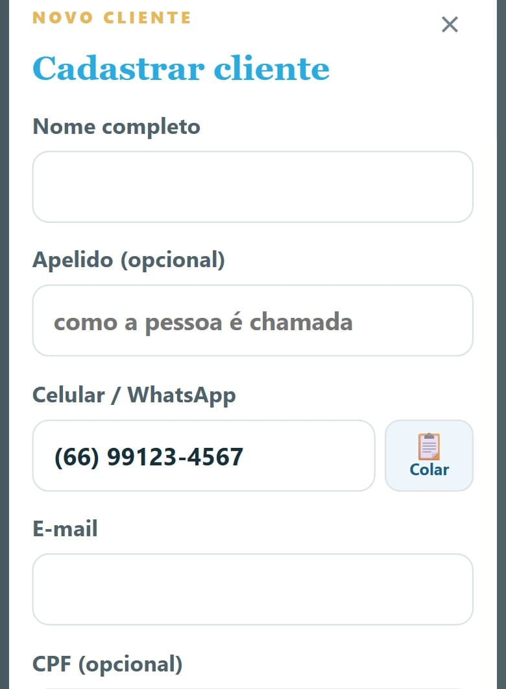

Puxar o telefone da agenda do celular (Android e iPhone)
SKL Gestão Imobiliária · Todo campo de telefone → 📇 Agenda (Android) ou 📋 Colar (iPhone)
- Objetivo
- Preencher o telefone sem digitar o número: escolhendo o contato na agenda (Android) ou colando o número copiado (iPhone).
- Aplicação
- Cliente novo (inclusive o “+ Novo cliente” de dentro do negócio), proprietário no cadastro do imóvel, interesse, acesso da equipe, celular da equipe, parceiro, seleção para cliente, contrato e “Eu corretor”.
- Responsáveis
- Todos que cadastram contatos (corretores, Central e administradores).
- Pré-requisitos
- Android: sistema aberto pelo Chrome (link ou app instalado pelo Chrome). iPhone: Safari ou app da tela de início. No computador não aparece botão (lá é só copiar e colar).
- Resultado esperado
- Celular preenchido no formato (66) 99999-9999. No Android, o nome e o e-mail do contato também entram no cadastro de cliente, proprietário e interesse, se os campos estiverem vazios.
1. Procedimento
Parte A · Android: 📇 Agenda
- Abra o cadastro. Ex.: Negócios → + Novo negócio → + Novo cliente ou Clientes → + Novo cliente.
- Ao lado do campo Celular / WhatsApp, toque em 📇 Agenda.
- A agenda do celular abre. Toque no contato: o número volta preenchido; se o contato tiver celular e fixo, o sistema escolhe o celular.
- Confira o nome e o e-mail (preenchidos só se estavam vazios), complete o resto e salve.
Parte B · iPhone: 📋 Colar
A Apple não deixa nenhum site abrir a agenda do iPhone. Por isso, no iPhone o botão ao lado do telefone é 📋 Colar: você copia o número no app Contatos e o sistema cola já arrumado (tira +55, espaços e traços).
- Abra o app Contatos (ou o contato no app Telefone).
- Toque e segure o número do contato e escolha Copiar.
- Volte ao sistema e toque em 📋 Colar ao lado do campo de telefone.
- Se o iPhone mostrar o balão Colar, toque nele. O número entra no formato (66) 99999-9999.
- Escreva o nome e complete o cadastro.

Parte C · iPhone: ligar a agenda no Safari (opcional)
O Safari tem a mesma função de agenda do Android, mas ela vem desligada, entre os recursos experimentais. Quem ligar passa a ter o 📇 Agenda também no iPhone.
- Abra Ajustes.
- iOS 18 ou mais novo: Apps → Safari → Avançado → Feature Flags. iOS 17 ou mais antigo: Safari → Avançado → Feature Flags (ou “Recursos Experimentais”).
- Na lista, procure Contact Picker API e ligue a chave.
- Feche o sistema por completo (arraste para cima na troca de apps) e abra de novo.
- Abra um cadastro: se o botão ao lado do telefone virou 📇 Agenda, está funcionando. Se continuar 📋 Colar, use o Colar (Parte B).
2. Pontos de atenção
O sistema só lê o contato que você escolher (ou o que você copiou), na hora que tocar no botão. A agenda inteira nunca é enviada.
A chave do Safari (Parte C) é um recurso experimental da Apple: pode mudar de nome ou de lugar numa atualização do iOS. Se sumir, o Colar continua funcionando.
Se o que foi copiado não tiver número, o sistema avisa e nada muda no campo.
3. Controle do documento
| Elaborado por | Versão | Data | Alteração |
|---|---|---|---|
| SKL Geo Soluções | 2.0 | 20/11/2026 | Incluído o iPhone: botão 📋 Colar e como ligar a agenda no Safari. |